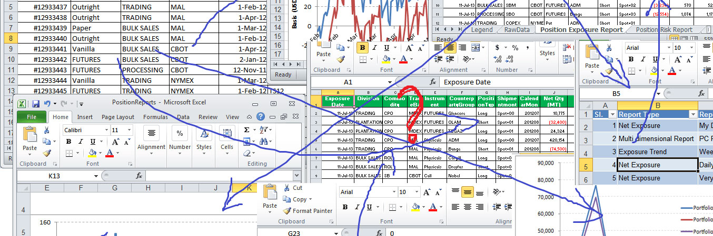

[1] 5[1] 50[1] 5[1] 4Atelier d’introduction | Faculté des sciences sociales
30 janvier 2026
Cette activité vise à présenter les langages de programmation comme outils d’analyse, en mettant l’accent sur R et ses applications en sciences sociales.
Ce que nous allons aborder
Levez la main si…

R c’est :
Pourquoi l’utiliser ?
R est un langage de programmation statistique, pas juste un logiciel avec des menus.
C’est probablement LA question que vous vous posez.
| R | Stata | |
|---|---|---|
| Nature | Langage de programmation | Logiciel statistique |
| Coût | Gratuit et open-source | Licence payante |
| Courbe d’apprentissage | Plus abrupte au début | Plus accessible pour débuter |
| Flexibilité | Très flexible et extensible | Plus standardisé |
On va explorer ça plus en détail, mais d’abord… voyons ce que R peut faire concrètement.
Situation : Vous avez un sondage de 5,000 répondants avec 50 variables.
Objectif : Comparer le score moyen de satisfaction selon la région et le groupe d’âge.
Dans Excel :
Le même code s’adapte à n’importe quel jeu de données
Le principe clé
Vous apprenez la logique une fois, puis vous l’appliquez à tous vos projets. Pas besoin de tout réapprendre à chaque nouvelle analyse.
Un préjugé courant : “R, c’est juste pour les stats et les chiffres.”
La réalité : R permet aussi d’analyser des données textuelles issues d’entretiens, de documents ou de réponses ouvertes.
Précision importante
On parle ici d’analyser des données qualitatives avec R (fouille de texte, comptage, visualisation) — ce qui est différent de l’analyse qualitative au sens méthodologique (interprétation, théorisation ancrée, etc.). R est un outil qui peut soutenir votre démarche, pas la remplacer.
Situation : Vous avez 30 entretiens semi-dirigés à analyser.
Objectif : Identifier les thèmes récurrents et comparer leur fréquence entre participants.
Approche traditionnelle :
Avec R :
R peut aller beaucoup plus loin dans l’analyse de données textuelles
# Exemple : Extraire les mots les plus fréquents par thème
entretiens %>%
unnest_tokens(mot, texte) %>% # Séparer chaque mot
anti_join(mots_vides_fr) %>% # Retirer "le", "la", "de"...
count(theme, mot, sort = TRUE) %>% # Compter par thème
group_by(theme) %>%
top_n(10) # Garder le top 10Ce que R permet avec les données textuelles
R est utilisé par des organisations reconnues :
À l’international :
Au Québec :
Suivi quotidien des intentions de vote - Élections fédérales 2025
Note
Animation générée automatiquement chaque jour avec R - CLESSN, Université Laval
Transformez vos analyses en outils accessibles à tous

Astuce
Cliquez sur l’image pour voir l’application en action
R s’adapte à tous types de données
Ce qu’on peut analyser :
Ce qu’on peut produire :
Maintenant que vous avez vu ce que R peut faire…
Avantages de R :
Avantages de Stata :
Choisir selon vos besoins :
| Choisir R si… | Choisir Stata si… |
|---|---|
| Vous voulez une carrière hors académie | Votre équipe utilise déjà Stata |
| Vous avez besoin de visualisations avancées | Vous faites des analyses économétriques classiques |
| Vous travaillez avec des données variées (texte, web, etc.) | Vous avez peu de temps pour apprendre |
| Vous voulez des analyses 100% reproductibles | Vous préférez une interface plus guidée |
Astuce
Notre recommandation : Apprenez R, mais gardez des notions de Stata pour la collaboration!
Apprendre R ouvre la porte à d’autres langages
Les concepts appris en R se transfèrent facilement :
Analyse de données :
Développement :
Note
Une fois qu’on maîtrise un langage de programmation, les autres deviennent beaucoup plus faciles à apprendre.
(Pas de panique, on ne va pas coder aujourd’hui!)
Quelle est la différence ?
Liens de téléchargement :
(On vous guidera pour l’installation avant la formation Initiation)

Script Où on écrit notre code
Environment Nos objets et données
Console Où s’exécutent les commandes
Files/Plots Fichiers et graphiques
Démonstration rapide
En R, on sauvegarde tout dans des objets avec <-
Note
Important : Les objets apparaissent dans le panneau Environment de RStudio!
Les packages sont comme des applications pour R
Analogie
R de base = téléphone neuf Packages = applications qu’on télécharge selon nos besoins
Analyses quantitatives :
Analyses qualitatives :
Et bien plus encore…
Rapports automatisés, tableaux de bord interactifs, cartes géographiques…
Parcours de formation R à la FSS - Hiver 2026
| Date | Formation | Horaire |
|---|---|---|
| 11 mars 2026 | Initiation à R | 9h à 15h |
| 20 mars 2026 | Approfondissement R | 9h à 15h |
Formation théorique (9h à 12h)
À partir d’une situation de recherche concrète et d’un jeu de données partagé, vous apprendrez à importer, formater et visualiser des données quantitatives et qualitatives.
Contenu :
Atelier pratique (13h à 15h)
En présence uniquement. Des mentors seront disponibles pour :
Formation théorique (9h à 12h)
Pour celles et ceux qui ont déjà une familiarité avec R. Approfondissement des compétences en analyse quantitative et qualitative avec des données réelles.
Contenu :
Atelier pratique (13h à 15h)
En présence uniquement. Venez avec :
Documentation et aide :
Apprentissage :
Communauté :
Merci pour votre attention!
Contact : etienne.proulx.2@ulaval.ca
Prochaines étapes :